JumpServer开源堡垒机支持对文件的上传和下载，并对传输记录进⾏审计。JumpServer的文件传输功能是用户使用频率较高的功能，常见的文件传输方式包括：rz和sz命令方式、文件管理方式和客户端工具方式。
在使用JumpServer进行文件传输的时候，常常有用户向JumpServer开源项目组反馈出现文件大小受限、传输卡顿、传输不稳定等情况，实际上这与用户所选择的文件传输方式有一定的关系。
本文将重点对比上述三种用户常用的JumpServer文件传输方式，并且测试验证JumpServer文件传输的实际效果，以便用户后续在传输文件时能够选用更为有效的文件传输方式。希望本文对广大企业的运维人员提升日常运维管理效率有所帮助。
一、测试准备
准备以下测试环境以及测试文件：
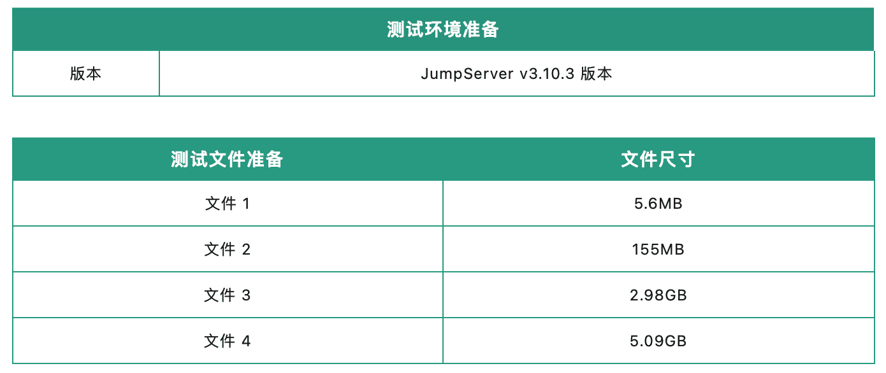
二、不同文件传输方式测试对比
1. rz和sz命令方式
用户连接资产后，使用rz和sz命令，直接拖动文件进行文件上传/下载（秒表计时）。
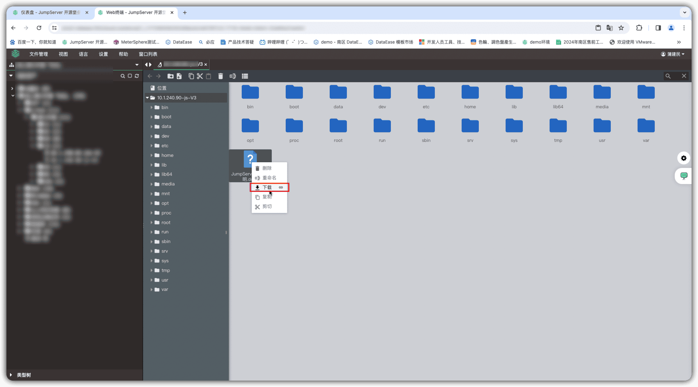
分别测试不同尺寸的测试文件，传输效果如表1所示：
▲ 表1 不同尺寸的文件通过rz和sz命令传输文件的效果对比
注意：
■ 上传155MB大小的文件时，传输文件容易出现卡住并最终会断开会话的情况，显示文件传输失败；
■ rz和sz命令文件传输方式有文件大小的限制，传输文件的上限为500MB。
2. 文件管理方式
用户选择通过SFTP协议连接资产，进行文件传输。具体步骤如下：
① 打开JumpServer的Web终端连接页面，选择需要连接的服务器，选择“Web SFTP”连接方式；
② 进入文件传输页面后，直接拖动文件到窗口中，即可将文件上传至对应目录；
③ 右键点击需要下载的文件，在打开的右键菜单中选择“下载”选项即可进行文件下载。
分别测试不同尺寸的测试文件，传输效果如表2所示：
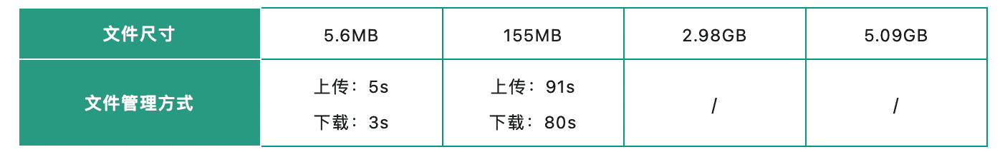
▲ 表2 不同尺寸的文件通过SFTP文件管理方式传输文件的效果对比注意：
■ 相比rz和sz命令的文件传输方式，通过SFTP文件管理方式传输文件时，传输页面会显示文件传输进度条，方便用户了解传输进度（由于时长原因，本次测试未对后两个文件进行计时）；
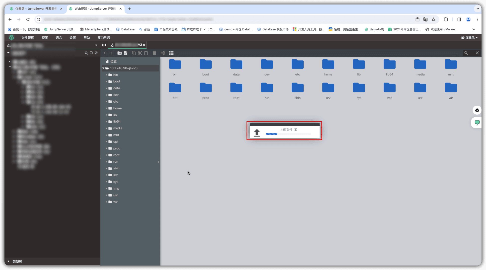
■ 受Nginx上传/下载文件的大小限制，通过JumpServer文件管理方式传输文件的文件尺寸初始默认为4096MB，即“CLIENT_MAX_BODY_SIZE=4096m”，文件尺寸可以进行修改。
3. 客户端工具方式
用户使用客户端工具通过JumpServer进行文件传输，以FileZilla、SecureCRT工具为例，具体步骤如下：
■ FileZilla工具：
① 点击FileZilla工具的“站点管理器”，填写相关信息，点击“连接”按钮，输入JumpServer的登录密码和MFA验证码，连接JumpServer堡垒机；
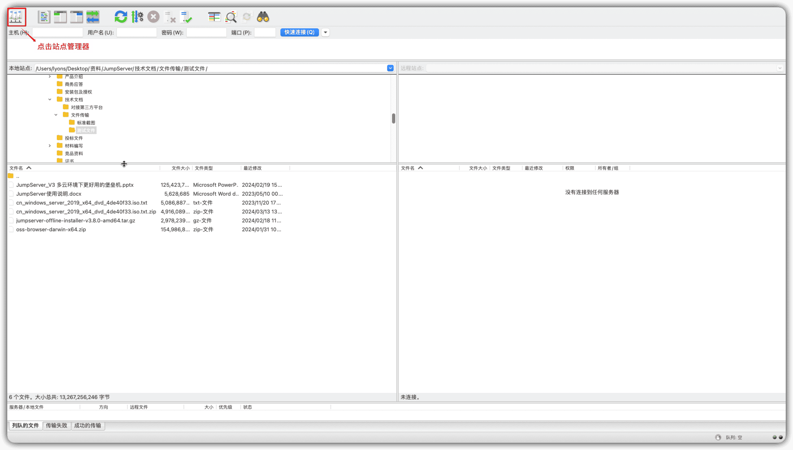
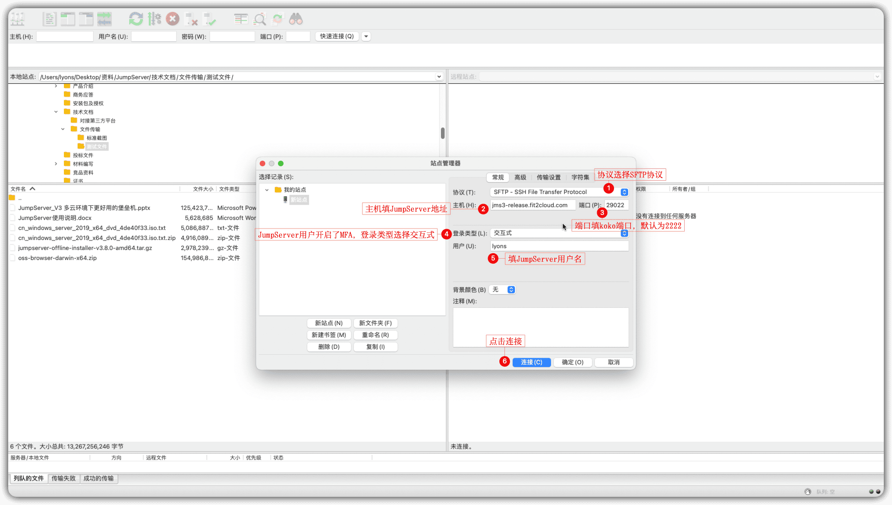
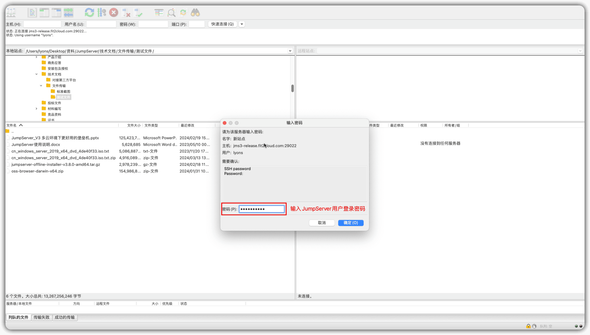
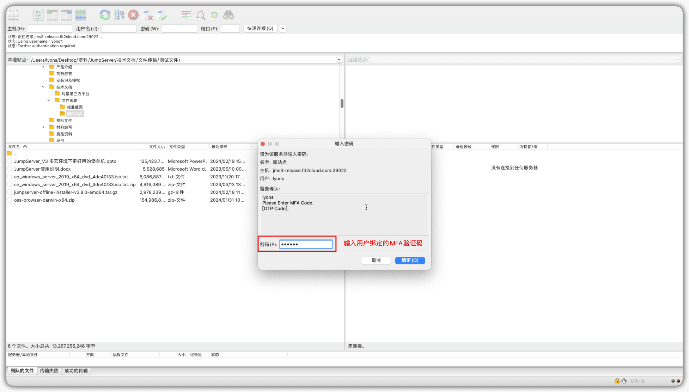
② 连接成功后，选择需要上传文件的服务器和资产账号目录，拖动文件直接上传，系统会弹窗要求用户再次输入JumpServer登录密码和MFA验证码，确认后即可开始文件传输；
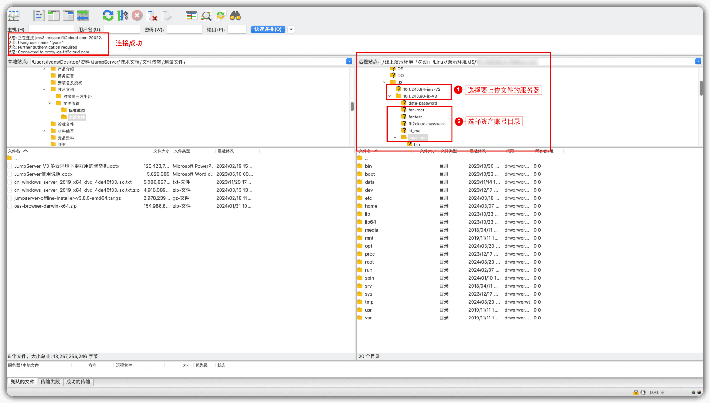
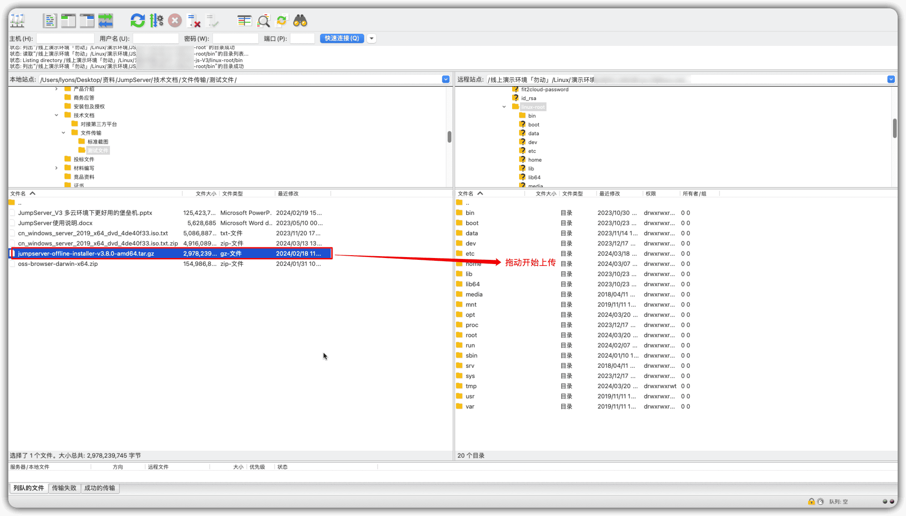
③ 在操作页面底部会显示文件传输状态，包括用时、完成进度、传输速率。
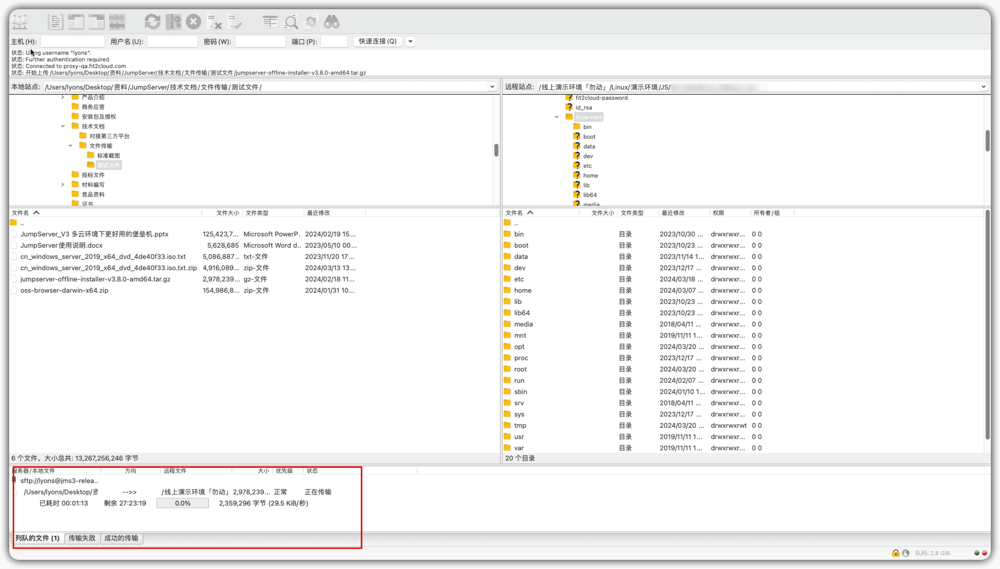
■ SecureCRT工具：
① 在SecureCRT工具中输入JumpServer的用户登录密码及MFA验证码，登录至JumpServer堡垒机；
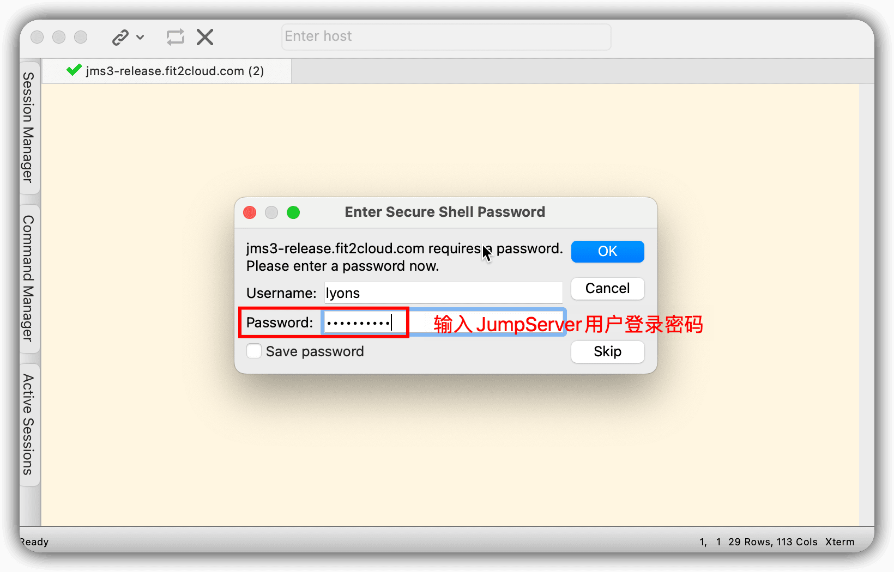
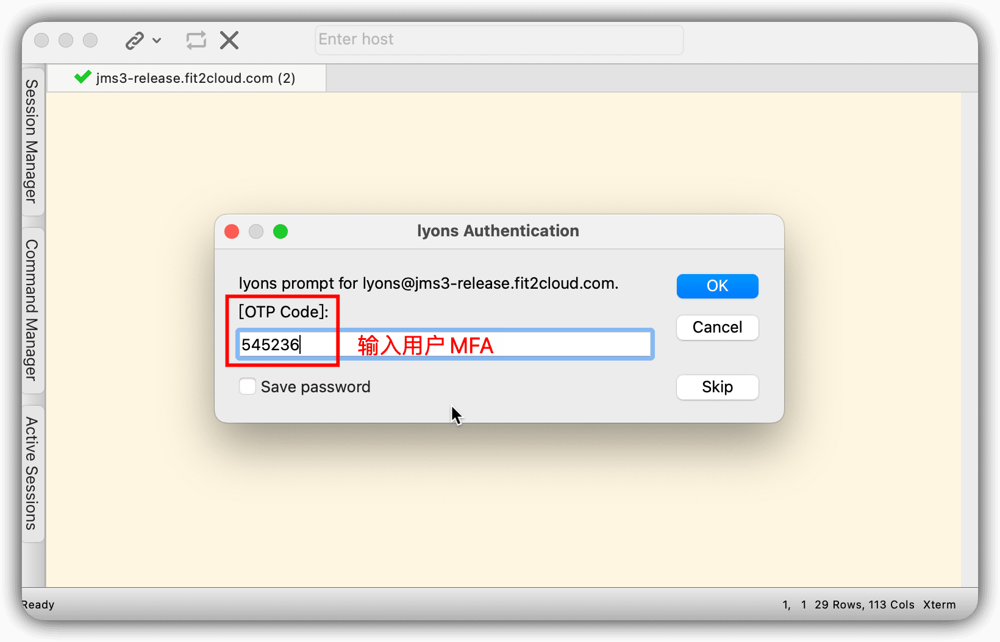
② 登录成功后，用户选择需要连接的资产和所使用的资产账号；
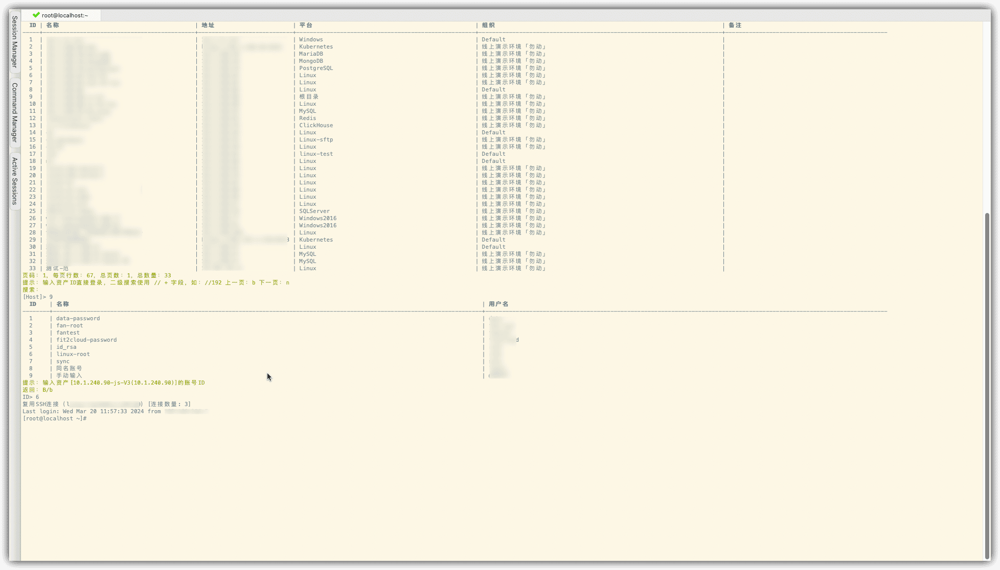
③ 输入rz命令，选择需要上传的文件，点击“OK”按钮，即可进行文件传输；
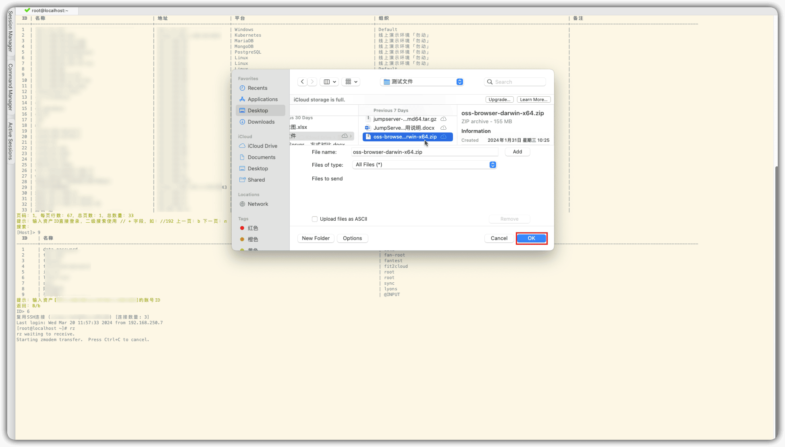
④ 操作页面将会显示文件的传输进度、传输速率、预计剩余时间。
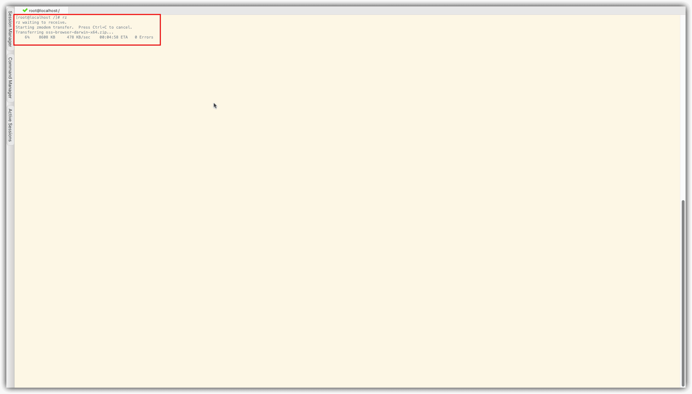
分别测试不同尺寸的测试文件，传输效果如表3所示：
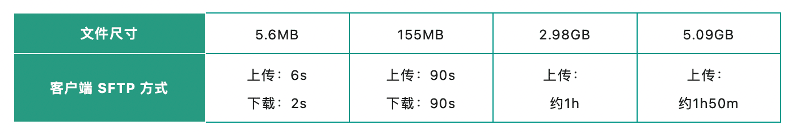
▲ 表3 不同尺寸的文件通过客户端工具传输文件的效果对比注意：
■ SecureCRT工具使用ZModem协议上传文件时，只能传输4GB以内的文件（受传输协议限制）。
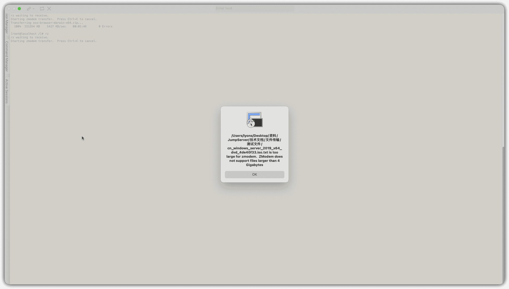
三、测试总结
经过上述一系列测试，JumServer开源项目组总结了一些文件传输的经验和建议，希望对广大用户有所帮助：
■ 当用户需要临时传输一些占用空间较小的文件时，可以使用rz和sz命令方式来传输文件，其上传文件的大小限制为500MB，传输较为方便快捷；
■ 文件管理方式和客户端传输方式的传输速度差不多，在一定程度上会受到网速的影响。客户端工具使用SFTP协议进行文件传输时，没有文件大小的限制，并且能够显示文件的传输速度，建议用户在传输较大的文件时，可以选择客户端连接的传输方式，方便用户了解传输的进度，避免用户误认为传输任务出现卡死等情况；
■ 使用客户端传输方式时，需要确认用户所使用的客户端本身是否具有文件大小限制的情况，例如通过SecureCRT工具使用ZModem协议来传输文件时，文件大小限制不能超过4GB；
■ 在进行文件传输之前，用户需要检查自身的网络情况，网速状况不同，文件传输的效果和用时差异也会较大。